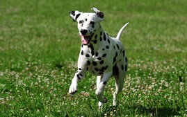
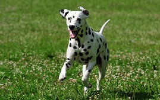

Bread
Friendliness
Height
Weight
Life Span
Exercise Needs
Bichon
Tibetan Terrier

Boston Terrier

Chow Chow

Bulldog
Finnish Spitz

Dalmatian

Xoloitzcuintli
Lhasa Apso

Shiba Inu

|
|||||
|---|---|---|---|---|---|
Bread |
Friendliness |
Height |
Weight |
Life Span |
Exercise Needs |
Bichon |
4 of 5 | 9.5 to 11.5 inches at the shoulders | 10 to 18 pounds | 12 to 15 years | 4 of 5 |
Tibetan Terrier
|
4 of 5 | 14 to 17 inches at the shoulders | 20 to 24 pounds | 12 to 15 years | 4 of 5 |
Boston Terrier
|
5 of 5 | Varies | 10 to 25 pounds | 11 to 13 years | 3 of 5 |
Chow Chow
|
1 of 5 | 17 to 20 inches at the shoulders | 40 to 70 pounds | 12 to 15 years | 2 of 5 |
Bulldog |
5 of 5 | Not specified by breed standards | 40 to 50 pounds | 8 to 10 years | 1 of 5 |
Finnish Spitz
|
5 of 5 | Varies | 40 to 50 pounds | 8 to 10 years | 1 of 5 |
Dalmatian |
5 of 5 | 19 to 23 inches at the shoulders | Varies | 10 to 13 years | 5 of 5 |
Xoloitzcuintli |
5 of 5 | Toy, 10 to 14 inches at the shoulders; Miniature, more than 14 to 18 inches; Standard more the 18 to 23 inches | Toy, 9 to 18 pounds; Miniature, 13 to 22 pounds; Standard, 20 to 31 pounds | 12 to 14 years | 2 of 5 |
Lhasa Apso
|
5 of 5 | 10 to 11 inches at the shoulders | 12 to 18 pounds | 12 to 15 years | 2 of 5 |
Shiba Inu
|
3 of 5 | 13.5 to 16.5 inches at the shoulders | 17 to 23 pounds | 12 to 16 years | 3 of 5 |